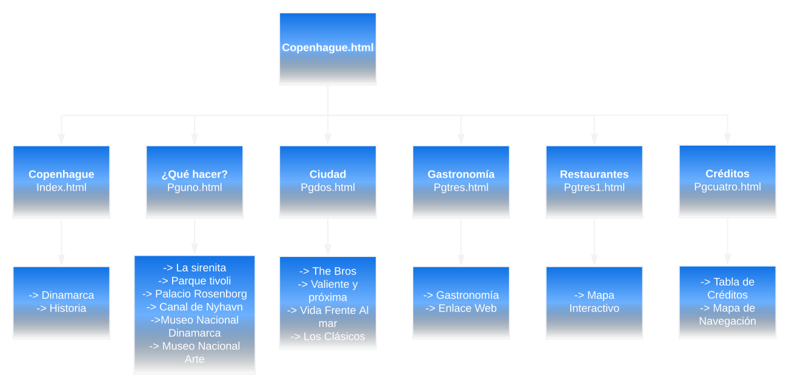

Copenhague
Copenhague
¿Qué hacer?
Ciudad
The Bros
Valiente Y Próxima
Vida frante al mar
Los Clásicos
Gastronomía
Restaurantes
Créditos
Créditos
Página
Página Web
Copenhague
Texto inicial | Visit Copenhagen
Texto Bandera de Dinamarca | Wikiwand
¿Qué Hacer?
Información | Visit Copenhagen See And do
Información | Expansion
Sirena
Parque Tivoli
Castillo Rosenborg
Museo Nacional de Dinamarca
Museo Nacional de Arte
Ciudad
Información e imagenes | Visit Copenhagen City areas
Gastronomía
Información e imagenes | Visit Copenhagen Eat and Drink
Restaurantes
Información e imagenes | Visit Copenhagen Eat and Drink
Imagen Mapa Copenhague| Poster Loung
Pin verde ubicación | Vecteezy
Mapa de Navegación
